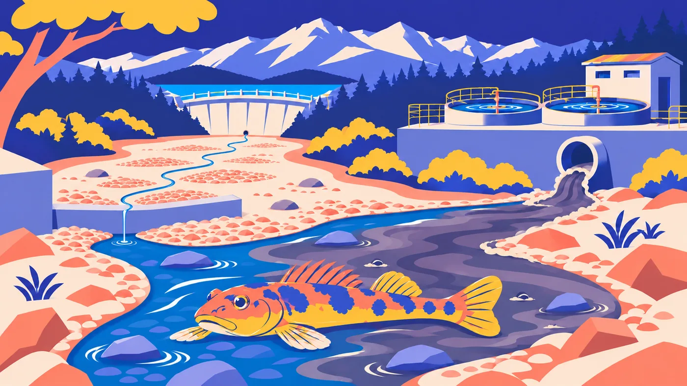
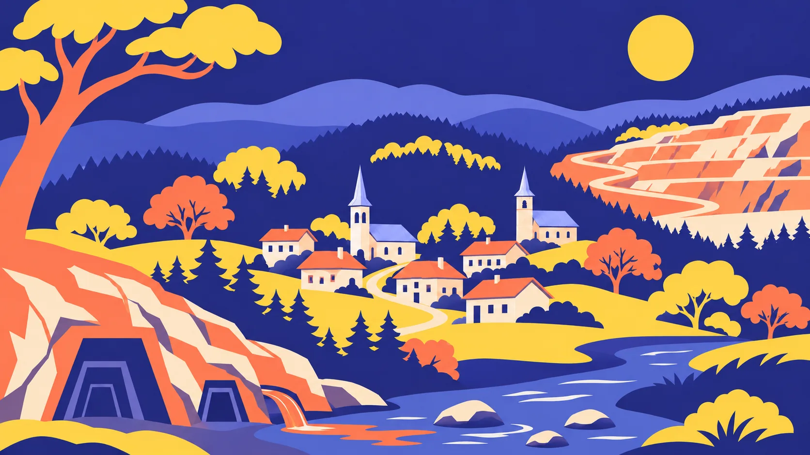
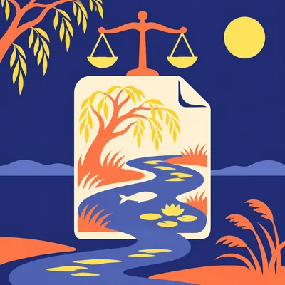
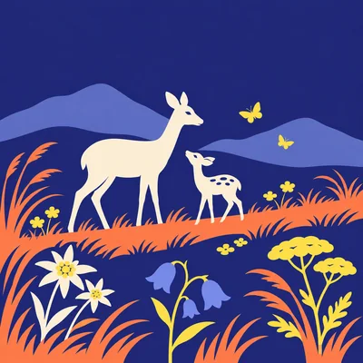
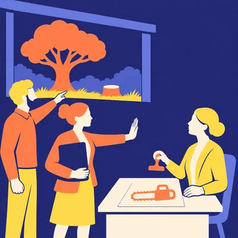
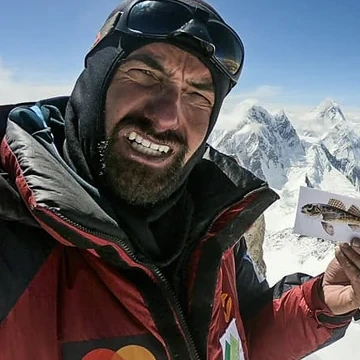
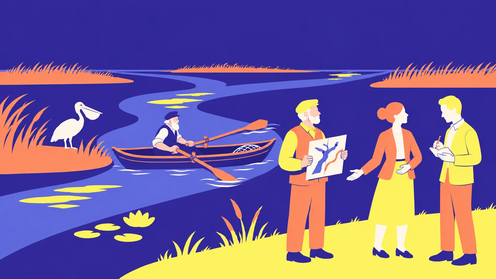
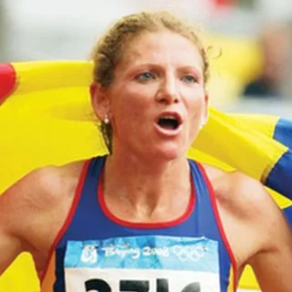
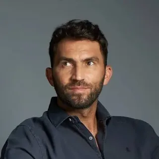

Inițiativa Cetățenească Europeană
Drepturi pentru Natură
Cerem o lege a Uniunii Europene prin care orice ecosistem, de la un râu sau o pădure până la un munte sau o mare, să poată deveni persoană juridică, cu drepturi și cu oameni care să-l apere. Am redactat deja un model de directivă și îl propunem Comisiei Europene și Parlamentului European. Acum strângem semnăturile.
Durează un minut, pe site-ul oficial al Comisiei Europene.
Dăm voce naturii
Ținta: un milion de semnături în Uniunea Europeană
O inițiativă cetățenească europeană este calea prin care cetățenii pot cere Comisiei Europene o lege nouă.
Inițiativa noastră a fost înregistrată de Comisie la 19 mai 2026, iar semnăturile se strâng de la 13 octombrie 2026. Dacă strângem cel puțin un milion de semnături până la 13 octombrie 2027 și atingem pragul minim în cel puțin șapte țări, Comisia trebuie să răspundă oficial și să-și explice decizia.
5,9 % din pragul României
7,5 % din țintă
01 / Problema
Legi bune, dar natura n-are cine s-o apere
Uniunea Europeană are legi solide de mediu, de la ocrotirea plantelor, a animalelor sălbatice și a apelor până la refacerea naturii și pedepsirea infracțiunilor de mediu. Niciuna nu stabilește însă cine apără, permanent, un ecosistem anume, la fiecare autorizație și în fiecare proces.
Organizațiile de mediu fac ce le stă în putere, dar nu au cum să urmărească, pentru fiecare râu, lac sau pădure, toate autorizațiile, planurile și procesele care le pot afecta.
În cazul Odrei, după catastrofa ecologică din 2022, Comisia Europeană i-a trimis Poloniei, la 29 aprilie 2026, o scrisoare de punere în întârziere pentru nerespectarea mai multor directive de mediu: normele existau, dar lipsea cineva care să ceară constant respectarea lor.
Regulile există de zeci de ani. Lipsește cine să le apere.
81 %
dintre habitatele protejate din Uniunea Europeană aveau, în perioada 2013–2018, o stare de conservare nesatisfăcătoare sau rea.
63 %
dintre râurile, lacurile și apele de coastă din Uniunea Europeană nu atingeau, în 2021, o stare ecologică bună.
Când nimeni nu invocă legea la timp, răul se face întâi și se constată abia după.
Foto: Alex Găvan

150
de aspreți găsiți la monitorizarea din 2026, pe aproximativ 10 km de râu
76 %
dintre ei, adică 114, trăiesc pe un singur sector de doar 450 de metri
Cei mai mulți aspreți trăiesc prinși ca între ciocan și nicovală: un prag de beton și o stație de epurare care poluează.
Cel mai rar pește de apă dulce din Europa
Râul Vâlsan și aspretele
Râul Vâlsan este singurul loc din lume unde trăiește aspretele.
- În amonte: un prag de beton pe care peștii nu-l pot trece.
- În aval: stația de epurare Brădetu, care nu funcționează cum trebuie și poluează cronic râul.
- Sub barajul Vâlsan și priza Dobroneagu: deseori, în râu nu rămâne nici debitul ecologic, apa minimă care trebuie lăsată în albie.
Cu drepturi pentru natură
Dacă ar fi desemnat, râul ar avea reprezentanți stabiliți prin lege. Ei ar participa la deciziile despre baraj, priză și stația de epurare și ar putea cere în instanță debitul ecologic și refacerea râului. Autorizațiile care îl pot afecta semnificativ ar fi reexaminate în cel mult trei ani.
Peste 20 de ani de luptă, încheiați cu o victorie
Roșia Montană
Oamenii din Roșia Montană, apoi o țară întreagă, au apărat munții și satele de proiectul celei mai mari mine de aur la suprafață din Europa, care ar fi folosit cianuri.
- Ani la rând Localnicii care au refuzat să plece s-au judecat cu compania.
- 2013 Din toamnă, zeci de mii de oameni au ieșit în stradă, în zeci de orașe din țară și din străinătate, iar în noiembrie Senatul a respins legea specială pentru mină.
- 2014 În iunie, Camera Deputaților a respins-o definitiv.
- 2021 Roșia Montană a intrat în patrimoniul mondial UNESCO.
- 2024 În martie, România a câștigat arbitrajul cu compania canadiană.
- 2026 Pe 13 noiembrie, România a câștigat definitiv: cererea companiei de a anula hotărârea a fost respinsă în totalitate. România nu plătește nimic din cele aproximativ 6,5 miliarde de dolari cerute.

3
sate ar fi fost rase
4
vârfuri de munte ar fi fost distruse
12 000
de tone de cianuri pe an
Cu drepturi pentru natură
Munții și apele de la Roșia Montană ar fi putut avea, de la început, apărători stabiliți prin lege, care să participe la fiecare autorizare și să poată merge în instanță în numele lor.
Lupta ar fi fost, probabil, mai scurtă și ar fi adus mai puțină suferință, iar apărarea n-ar mai fi stat, atâția ani, doar pe umerii oamenilor care au luptat pentru ei, în stradă și în instanțe.

„Natura are dreptul să fie recunoscută prin lege ca o ființă vie, cu dreptul de a exista și de a-și continua ciclurile vitale.”
02 / Propunerea
Ecosisteme cu drepturi și cu apărători
Ecosistemele alese de fiecare țară devin persoane juridice, cu drepturi proprii și cu oameni care le pot apăra, de la autorizarea proiectelor până în instanță.
Propunerea ia forma unei directive a Uniunii Europene, pe care fiecare țară o preia în legislația națională. Poate fi ales orice ecosistem, de la un râu, un lac sau o pădure până la o deltă, o turbărie sau o zonă de mare.

01
Devine persoană juridică
De la data desemnării, ecosistemul este persoană juridică: are drepturi proprii și poate merge în instanță prin reprezentanții lui. Ce înseamnă concret aceste drepturi se stabilește după indicatori științifici ai stării lui și după obligațiile, deja existente în lege, de a nu-l deteriora și de a-l reface.

02
Dreptul de a exista
Ecosistemul desemnat are dreptul să existe, iar autoritățile trebuie să-l respecte și să-l asigure în planuri, programe și autorizări.
03
Dreptul de a se regenera
Ecosistemul are dreptul să-și mențină și să-și refacă singur structura și funcțiile, inclusiv ciclurile vitale ale speciilor și ciclurile apei.

04
Dreptul de a fi refăcut
Când a fost degradat, ecosistemul are dreptul să fie refăcut. Instanța îl poate obliga pe cel care l-a degradat să-l refacă, după regulile de răspundere de azi.

05
Reprezentanți care îl apără
Localnici, organizații de mediu și oameni care trăiesc din ecosistem, ca pescarii sau fermierii, îl reprezintă în fața autorităților și în instanță, sprijiniți de un comitet științific.
Cum funcționează, în patru pași
-
1
Alegerea
Fiecare țară desemnează cel puțin un ecosistem
Ecosistemul trebuie să se afle, integral sau parțial, în situri Natura 2000, să fie într-o stare nefavorabilă și sub presiuni documentate. Țara poate desemna oricând și alte ecosisteme. Autoritățile locale, organizațiile de mediu și grupurile de locuitori pot cere desemnarea. Dacă experți independenți confirmă că un ecosistem din Natura 2000 îndeplinește criteriile, statul trebuie să-l desemneze, iar instanța îl poate obliga.
-
2
Reprezentanții
Numiți în cel mult trei luni
În cel mult trei luni de la desemnare se înființează un organ de reprezentare, o comisie de monitorizare și un comitet științific. Până atunci, ecosistemul are un reprezentant interimar. Reprezentanții autorităților pot participa la lucrări, dar nu votează.
-
3
Vocea în decizii
Participă la autorizări
Organul de reprezentare este parte în evaluările de mediu, în autorizările privind apele și în planurile care pot afecta ecosistemul. Este anunțat cel târziu odată cu publicul și are cel puțin 30 de zile ca să intervină.
-
4
Instanța
Când legea e încălcată
În primul rând, organul de reprezentare poate merge în instanță în numele ecosistemului. Pot merge și organizațiile de mediu, autoritățile locale din zonă și grupurile de oameni care locuiesc sau lucrează acolo; câți oameni trebuie să aibă cel puțin un grup stabilește fiecare țară, dar pragul nu poate depăși 100. Aceștia îi cer întâi, în scris, organului de reprezentare să acționeze; dacă organul nu o face în 60 de zile, pot merge ei în instanță. Instanța poate opri încălcarea și poate dispune refacerea; când refacerea nu e posibilă, dispune despăgubiri, care intră în fondul ecosistemului.
O voce pentru natură, nu un drept de veto
Nicio obligație nouă
Nimeni care lucrează în ecosistem sau în jurul lui nu primește obligații noi de mediu: nici firmele, nici fermierii, nici pescarii, nici proprietarii. Se aplică aceleași legi de mediu ca până acum.
Cine respectă autorizația e protejat
Cine respectă o autorizație valabilă și obținută cu informații corecte nu poate fi obligat, prin procesele prevăzute de directivă, la refacere sau despăgubiri. Se poate contesta doar autorizația.
Proprietatea și accesul rămân aceleași
Desemnarea nu schimbă cine deține terenul sau apa, iar accesul public rămâne cel de azi.
Autorizațiile existente rămân valabile
Doar cele care pot afecta semnificativ ecosistemul se reexaminează, în cel mult trei ani, cu participarea reprezentanților. Reexaminarea urmează procedurile de azi și poate duce, ca și acum, la modificarea sau revocarea autorizației.
Proiectele prioritare își păstrează termenele
Proiectele de energie regenerabilă și proiectele strategice pentru tehnologii cu emisii nete zero și pentru materii prime critice își păstrează prioritatea și termenele de autorizare; reprezentanții ecosistemului participă în aceleași termene.
Foto: Alex Găvan
Documentele
Am redactat deja textele, ca drumul inițiativei să fie mai scurt: Comisiei Europene îi propunem un model de directivă și regulamentul care o completează, ca punct de plecare, iar Parlamentului European, un proiect de rezoluție prin care să-i ceară și el Comisiei această lege. Textul final îl stabilesc Comisia, Parlamentul European și Consiliul.
Ce câștigăm
Cu propunerea noastră, fiecare ecosistem desemnat va avea apărători stabiliți prin lege, care pot cere, la autorități și în instanță, ca legile de mediu să fie respectate.
- Natura: oameni care o apără tot timpul. oameni care o apără tot timpul și care pot interveni în deciziile care o pot afecta. Despăgubirile intră în fondul ecosistemului, nu în bugetul statului.
- Comunitățile locale: pot cere protecția unui loc și primesc un răspuns motivat. pot cere protecția unui râu, a unei păduri sau a unui lac și primesc un răspuns motivat. Localnicii pot fi printre reprezentanții ecosistemului, cu drept de vot. Alături de ei stau organizații de mediu și oameni care trăiesc din ecosistem, ca pescarii sau fermierii; nicio categorie nu are majoritatea. În fiecare an află, dintr-un raport public, în ce stare e ecosistemul.
- Autoritățile: un partener stabil și avize științifice independente. un partener de discuție stabil și avize științifice independente; problemele se rezolvă în timpul procedurii, nu după ce răul s-a produs.
- Firmele: aceleași reguli de bază în toată Uniunea și nicio obligație nouă. aceleași reguli de bază în toată Uniunea, deci mai multă previzibilitate, și nicio obligație nouă.
- Europa: râurile și pădurile care trec granițele se apără împreună. natura nu se oprește la graniță. Când un râu, o pădure sau un munte se întinde în mai multe țări, acestea se consultă ca să-l desemneze la fel. Dacă o decizie luată într-o țară poate afecta partea lui din altă țară, apărătorii lui sunt anunțați și o pot contesta. Așa pot fi apărate împreună râuri precum Dunărea, Odra sau Sambre.

„A da naturii drepturi legale înseamnă, de fapt, a ne da nouă mai multe drepturi reale.”
03 / Precedente
Primul pas s-a făcut. Următorul e al Uniunii.
Laguna Mar Menor, în Spania: o lege din 2022 i-a recunoscut personalitatea juridică, iar Curtea Constituțională a Spaniei a confirmat-o în 2024.
268
de inițiative din toată lumea care dau drepturi naturii stau la baza propunerii noastre. Dintre ele, 132 sunt din Europa.
25 de lecții din cazuri reale
Din aceste inițiative am învățat 25 de lecții: fiecare regulă importantă din propunerea noastră răspunde unei probleme întâlnite deja.
-
1Laguna Mar Menor, Spania
Reprezentarea trebuie să existe din ziua desemnării.
În propunere: un reprezentant interimar, numit prin actul de desemnare.
-
2Mar Menor, Spania · India
Reprezentanții ecosistemului trebuie să poată decide fără acordul autorităților.
În propunere: autoritățile participă fără drept de vot și nicio categorie nu are drept de veto.
-
3Columbia · Ecuador
Drepturile fără finanțare și fără monitorizare rămân declarative.
În propunere: un fond al ecosistemului, finanțare de bază de la stat și un comitet științific.
-
4Lacul Erie, Statele Unite · Cáceres, Brazilia
Recunoașterea locală nu este suficientă.
În propunere: o lege la nivelul Uniunii; desemnarea nu poate fi retrasă ușor.
-
5Râul Yarra, Australia · râul Magpie, Canada
Un rol doar consultativ nu protejează.
În propunere: reprezentanții sunt parte în proceduri și pot merge în instanță.
-
6Râul Tavignanu, Franța · râul Odra, Polonia
Dreptul existent funcționează doar atunci când cineva îl invocă.
În propunere: reprezentanții participă la autorizări și primesc răspuns motivat la cererile lor.
-
7Gange și Yamuna, India
Instanțele ezită când nu e clar cine răspunde pentru pagubele produse de inundații.
În propunere: răspunderea pentru inundații sau secetă rămâne cea de dinainte de desemnare.
-
8Mar Menor, Spania
Instanțele acceptă greu procesele pornite de oricine în numele naturii.
În propunere: o listă clară a celor care pot merge în instanță în numele ecosistemului.
-
9Uniunea Europeană, 2003–2024
Accesul la justiție este unul dintre punctele cele mai disputate politic.
În propunere: reguli precise, limitate la ecosistemele desemnate, și un text separat pentru actele instituțiilor Uniunii.
-
10Râul Spree, Germania
Juriștii sceptici trebuie să primească un răspuns direct: lipsesc aplicarea și reprezentarea, nu regulile.
În propunere: nicio obligație nouă; reprezentanții cer aplicarea legilor care există deja.
-
11Bolivia · Bangladesh
Instituția și finanțarea ei trebuie create de aceeași lege.
În propunere: reprezentarea ecosistemului și finanțarea ei sunt prevăzute în același text.
-
12Amazonul columbian
Măsurile dispuse de instanță în sarcina statului nu se execută dacă nimeni nu urmărește aplicarea lor.
În propunere: reprezentanți care urmăresc aplicarea și rapoarte periodice.
-
13Râul Vilcabamba, Ecuador
Precauția are efect real când cel dat în judecată trebuie să dovedească lipsa riscului.
În propunere: principiul precauției și obligația celui dat în judecată de a prezenta probele pe care le are; o prezumție a legăturii de cauzalitate rămâne o opțiune pentru legiuitori.
-
14Orange County, Florida, Statele Unite
O lege a statului poate lăsa fără efect drepturile votate într-un comitat.
În propunere: o lege la nivelul Uniunii.
-
15Chile
O reformă care vrea totul deodată poate fi respinsă cu totul.
În propunere: un act limitat la ecosistemele desemnate, aplicat pe etape.
-
16Râul Marañón, Peru · Te Urewera, Noua Zeelandă
Comunitățile care trăiesc din ecosistem sunt reprezentanții firești.
În propunere: localnicii și cei care trăiesc din ecosistem au locuri printre reprezentanții lui.
-
17Panama
O lege-cadru are nevoie de acte concrete pentru ecosisteme anume.
În propunere: fiecare ecosistem este desemnat individual.
-
18Insulele Loyalty, Noua Caledonie (Franța) · Țările de Jos
Personalitatea juridică trebuie dată de autoritatea care are competență în dreptul civil.
În propunere: ecosistemul devine persoană juridică chiar prin desemnare, după legea fiecărei țări.
-
19Erfurt, Germania · Polonia
Fără o lege, drepturile recunoscute doar de instanțe rămân fragile.
În propunere: drepturi și reprezentanți stabiliți prin lege.
-
20Râul Machángara, Ecuador
Măsurile dispuse de instanță trebuie să se aplice și cât timp se judecă apelul.
În propunere: măsurile de oprire produc efecte și pe durata apelului; instanța urmărește planul de refacere.
-
21Grant Township, Statele Unite
Protecția împotriva proceselor abuzive trebuie să îi cuprindă și pe avocați.
În propunere: protecție împotriva proceselor abuzive, inclusiv pentru avocați și experți; cheltuieli plafonate.
-
22Eijsden-Margraten și Amsterdam, Țările de Jos
Oamenii din zonă au nevoie de o cale legală prin care să ceară protecția unui loc.
În propunere: autoritățile locale, organizațiile de mediu și grupurile de locuitori pot cere desemnarea, cu răspuns motivat.
-
23Râul Odra, Cehia, Polonia și Germania · râul Sambre, Franța și Belgia
Pentru ecosistemele care trec granițele, și țara vecină trebuie anunțată.
În propunere: reprezentanții ecosistemului din țara vecină sunt anunțați despre procedurile care îl pot afecta.
-
24Mar Menor, Spania
Reprezentanții naturii trebuie să aibă un cuvânt real și în procesele penale.
În propunere: reprezentanții sunt informați la timp și ascultați înainte de orice acord; despăgubirile intră în fondul ecosistemului.
-
25Râul Odra, Polonia
Obiecțiile instituțiilor de specialitate trebuie să primească răspuns chiar în textul legii.
În propunere: răspunsuri în text despre răspunderea pentru inundații, termenele de contestare și criteriile de alegere.
Foto: Cristian Bortes, CC BY 2.0
Ce arată cele 268 de cazuri
-
Ce e stabilit la nivel național rezistă mai bine decât actele locale.
Drepturile din constituții și din hotărâri judecătorești (Ecuador, Columbia, Peru) și din legi naționale (Spania, Noua Zeelandă, Panama, Uganda) au rezistat în mare parte. Actele locale din Statele Unite și actul provincial din Insulele Loyalty au fost anulate sau înlăturate.
În propunere: o directivă a Uniunii, iar personalitatea juridică vine prin lege.
-
Natura câștigă deja procese.
În Ecuador și în Peru, instanțele au dat câștig de cauză râurilor și pădurilor în șapte procese, de la pădurea Los Cedros la râul Marañón. Procesele pierdute, din Statele Unite, Germania și Elveția, nu aveau în spate o lege: se sprijineau pe acte locale sau tribale ori doar pe interpretarea judecătorilor.
În propunere: o lege a Uniunii, aplicată în fiecare țară, cu oameni stabiliți prin lege care pot merge în instanță pentru natură.
-
Drepturile speciilor rămân fragile.
Apar mai ales în acte locale și în hotărâri judecătorești. Singurul act regional pentru specii ajuns în fața unei instanțe superioare, în Insulele Loyalty, a fost înlăturat: autoritatea care l-a adoptat nu avea această competență.
În propunere: drepturi pentru ecosisteme întregi, nu pentru specii izolate, printr-un act al Uniunii.

Dacă Delta Dunării ar fi desemnată
Reprezentanții Deltei ar participa la autorizarea proiectelor care o pot afecta și ar putea contesta în instanță deciziile care îi încalcă drepturile. Despăgubirile ar intra în fondul Deltei și ar ajuta la refacerea ei.
Se poate. Spania a făcut-o deja pentru o lagună.
„Statul recunoaște dreptul oricărei persoane la un mediu înconjurător sănătos și echilibrat ecologic.”
Constituția României, articolul 35 alineatul (1)
Foto: Alex Găvan
04 / Drumul până la lege
Cum devine lege propunerea noastră
Pașii, în ordine, de la semnăturile noastre până la legea din fiecare țară: cine decide la fiecare pas și cât durează.
-
Depunerea și înregistrarea
Am depus inițiativa la Comisia Europeană la 27 martie 2026. Comisia a înregistrat-o la 19 mai 2026, prin Decizia de punere în aplicare (UE) 2026/1141.
Făcut: 19 mai 2026
-
Semnăturile
Strângem un milion de semnături, cu pragul minim atins în cel puțin șapte țări. În România avem nevoie de cel puțin 23 760.
Cât durează: 12 luni, de la 13 octombrie 2026
-
Verificarea și răspunsul Comisiei
Țările verifică semnăturile. Comisia Europeană se întâlnește cu organizatorii inițiativei, Parlamentul European organizează o audiere publică, în care organizatorii își prezintă inițiativa, iar Comisia răspunde oficial.
Cât durează: predarea semnăturilor, verificarea lor și depunerea la Comisie, cel mult 9 luni; răspunsul Comisiei, cel mult 6 luni
-
Propunerea de directivă
Dacă hotărăște să acționeze, Comisia prezintă oficial propunerea de lege. Noi am redactat-o deja, sub forma unei directive, împreună cu un regulament care o completează, și i-o propunem Comisiei.
Cât durează: depinde de Comisie
-
Parlamentul European și Consiliul
Dezbat, modifică și adoptă directiva împreună.
Cât durează: nu există un termen fix
-
Fiecare țară o preia în legislația națională
Țările au 24 de luni ca să treacă directiva în legislația lor (transpunerea), iar în cel mult un an după aceea desemnează cel puțin un ecosistem. Am redactat și proiectul legii prin care România ar prelua directiva.
Cât durează: 24 de luni
Comisia nu este obligată să propună legea
Trebuie însă să răspundă oficial inițiativei noastre și să-și explice decizia.
De aceea lucrăm pe toate planurile deodată, ca șansele să fie cât mai mari: strângem semnăturile, îi propunem Comisiei textul legii și cerem Parlamentului European o rezoluție prin care să ceară și el legea.
Am redactat deja și proiectul acestei rezoluții, pe care îl propunem eurodeputaților. Semnăturile dau forță tuturor acestor pași.
Calendarul 2026–2029
| Când | Ce se întâmplă |
|---|---|
| 13.10.2026–13.10.2027 | Colectarea semnăturilor |
| ne propunem: ianuarie–septembrie 2027 | Calea Parlamentului, prima cerere: un grup de eurodeputați pornește procedura, apoi urmează raportul și votul în plen; data depinde de calendarul Parlamentului |
| cel târziu 13.7.2028 | Țările verifică semnăturile, apoi inițiativa este depusă la Comisie |
| cel târziu în septembrie 2028, dacă votul are loc în septembrie 2027 | Calea Parlamentului: Comisia răspunde în 3 luni de la vot; propune legea cel târziu după un an sau o trece în programul de lucru pe anul următor, ori își motivează refuzul |
| cel târziu 13.10.2028 | Audierea publică în Parlamentul European |
| cel târziu 13.1.2029 | Răspunsul Comisiei la inițiativa cetățenească; după audiere, Parlamentul poate repeta cererea, ca rezervă |
| după propunere, fără termen fix | Parlamentul European și Consiliul adoptă legea; apoi fiecare țară o transpune în 24 de luni |
| 31.10.2029 | Se încheie mandatul actualei Comisii |
Cine decide
Comisia Europeană răspunde inițiativei noastre și hotărăște dacă propune directiva: numai ea poate propune oficial o lege a Uniunii.
Parlamentul European, cu 720 de eurodeputați, poate cere Comisiei directiva printr-o rezoluție, iar apoi o votează.
Consiliul Uniunii Europene, adică miniștrii celor 27 de țări, o votează împreună cu Parlamentul European.
România și celelalte 26 de țări preiau directiva în legea lor și desemnează ecosistemele.
Pasul care urmează îl facem împreună: semnăturile.
05 / Oamenii
Cei ce dau voce naturii
Inițiator
Foto: Radu Sălcudean
Parteneri
Rețeaua inițiativei are organizații partenere în 17 state membre, inclusiv România, și în Regatul Unit.
 Austria
Austria Austria
Austria Belgia
Belgia Belgia
Belgia Cehia
Cehia Cehia
Cehia Danemarca
Danemarca Finlanda
Finlanda Franța
Franța Franța
Franța Franța
Franța Germania
Germania Germania
Germania Letonia
Letonia Luxemburg
Luxemburg Polonia
Polonia Spania
Spania Suedia
SuediaȚările de Jos
 Ungaria
Ungaria Regatul Unit
Regatul Unit- Sambre 2030Belgia
- Nature’s GuardiansBelgia
- Internationale des rivièresFranța
- Dr. Peter Doran, School of Law, Queen’s University BelfastIrlanda
- Associação AtlantiquePortugalia
- ILP Mar MenorSpania
Susținători
Organizațiile care susțin inițiativa în România.
 De invitat
De invitat De invitat
De invitat De invitat
De invitat De invitat
De invitat De invitat
De invitat De invitat
De invitat De invitat
De invitat De invitat
De invitat- SOS Satele Copiilor RomâniaDe invitat
 De invitat
De invitat De invitat
De invitat De invitat
De invitat De invitat
De invitat De invitat
De invitat De invitat
De invitat De invitat
De invitat De invitat
De invitat De invitat
De invitat De invitat
De invitat De invitat
De invitat De invitat
De invitat De invitat
De invitat De invitat
De invitat De invitat
De invitat De invitat
De invitat De invitat
De invitat De invitat
De invitat De invitat
De invitat De invitat
De invitat De invitat
De invitat De invitat
De invitat De invitat
De invitat De invitat
De invitat De invitat
De invitat De invitat
De invitat De invitat
De invitat De invitat
De invitat De invitat
De invitat De invitat
De invitat De invitat
De invitat De invitat
De invitat De invitat
De invitat De invitat
De invitat De invitat
De invitat De invitat
De invitat De invitat
De invitat De invitat
De invitat De invitat
De invitat De invitat
De invitat De invitat
De invitat De invitat
De invitat De invitat
De invitat De invitat
De invitat De invitat
De invitat De invitat
De invitat De invitat
De invitat De invitat
De invitat De invitat
De invitat De invitat
De invitat De invitat
De invitat De invitat
De invitat De invitat
De invitat De invitat
De invitat De invitat
De invitat De invitat
De invitat De invitat
De invitat De invitat
De invitat- Fundația Rewilding RomaniaDe invitat
- Asociația BiogeographicaDe invitat
 De invitat
De invitat De invitat
De invitat De invitat
De invitat- Expert ForumDe invitat
- CeRe – Centrul de Resurse pentru participare publicăDe invitat
- Centrul pentru Inovare PublicăDe invitat
- România CuratăDe invitat
- REPER21De invitat
- Asociația EcolegalDe invitat
- Platforma pentru Adaptare ClimaticăDe invitat
- Consiliul Național al ElevilorDe invitat
 De invitat
De invitat De invitat
De invitat De invitat
De invitat De invitat
De invitat De invitat
De invitat De invitat
De invitat De invitat
De invitat De invitat
De invitat De invitat
De invitat De invitat
De invitat De invitat
De invitat De invitat
De invitat De invitat
De invitat De invitat
De invitat De invitat
De invitat De invitat
De invitat De invitat
De invitat De invitat
De invitat De invitat
De invitat De invitat
De invitat- Asociația Ecotur SibiuDe invitat
- Asociația AltitudineDe invitat
- Clujul SustenabilDe invitat
- Comunitatea Studenților Naturaliști Cluj-NapocaDe invitat
 De invitat
De invitat De invitat
De invitat De invitat
De invitat De invitat
De invitat De invitat
De invitat De invitat
De invitat De invitat
De invitat De invitat
De invitat De invitat
De invitat De invitat
De invitat De invitat
De invitat De invitat
De invitat De invitat
De invitat De invitat
De invitat
Ambasadori
Andreea Marin
fondatoarea Fundației Prețuiește Viața
De invitatDumitru-Dorin Prunariu
astronaut

Constantina Diță
campioană olimpică la maraton

Horia Tecău
fost tenismen, campion de Grand Slam la dublu
De invitatDavid Popovici
înotător, campion olimpic
De invitatDan Dinu
fotograf și cineast de natură
De invitatDelia
cântăreață
De invitatAlexandru Tomescu
violonist
De invitatAndreea Esca
jurnalistă, prezentatoare de știri
De invitatMatthieu Ricard
călugăr budist, scriitor și fotograf
De invitatCharlie Ottley
realizatorul documentarelor Wild Carpathia
De invitatCristian Lascu
speolog și jurnalist
De invitatSimona Halep
fostă jucătoare de tenis, campioană de Grand Slam
De invitatCristian Mungiu
regizor, câștigător al Palme d’Or
De invitat
06 / Întrebări
Tot ce vrei să știi înainte să semnezi
Semnarea și datele personale
7 întrebări
Ce este o inițiativă cetățenească europeană?
Este un drept prevăzut în tratatele Uniunii: un milion de cetățeni din cel puțin șapte țări pot cere Comisiei Europene să propună o lege. Inițiativa trebuie întâi înregistrată de Comisie, apoi are 12 luni pentru semnături. Dacă le strânge, Comisia îi primește pe organizatori, Parlamentul European organizează o audiere publică, iar Comisia trebuie să răspundă oficial, în cel mult șase luni, și să-și explice decizia.
E o petiție? De ce îmi cere CNP-ul?
Nu e o petiție obișnuită. E un instrument oficial al Uniunii Europene: ca să se numere, fiecare semnătură e verificată de țara ta. De aceea, formularul cere un număr de identificare: codul numeric personal sau numărul cărții de identitate ori al pașaportului. Datele le scrii numai în formularul Comisiei Europene; organizatorii nu le văd.
Pot semna dacă locuiesc în străinătate?
Da. Contează cetățenia, nu locul unde locuiești: la „Selectați cetățenia” alegi România, iar semnătura se numără pentru România.
Locuiesc în România, dar sunt cetățean al altui stat. Pot semna?
Da, dacă ai cetățenia unui stat al Uniunii. Alegi țara ta, iar semnătura se numără pentru ea. Dacă nu ai cetățenia unui stat al Uniunii, nu poți semna, dar poți trimite linkul mai departe.
Am sub 18 ani. Pot semna?
Dacă ești cetățean român, nu: poți semna de la 18 ani. Poți însă vorbi despre inițiativă cu părinții, profesorii și prietenii mai mari și îți poți face imaginea „Sunt vocea…”.
Contează semnătura mea, dacă România nu atinge pragul?
Da. Toate semnăturile valabile intră în totalul de un milion. Pragul național contează doar pentru a doua condiție: cel puțin șapte țări care îl ating.
De ce să semnez, dacă oricum decide Comisia?
Pentru că fără un milion de semnături Comisia nu are nicio obligație. Cu ele, Comisia trebuie să-i primească pe organizatori, Parlamentul European organizează o audiere publică, iar la final Comisia răspunde oficial și își explică decizia.
Temeri frecvente
9 întrebări
Mi se poate lua terenul?
Nu. Desemnarea nu schimbă cine deține terenul sau apa, iar accesul public rămâne cel de azi.
Mai pot intra în pădure, culege ciuperci sau pescui?
Da. Accesul public rămâne cel de azi, iar directiva nu adaugă obligații noi față de legile existente. Pescarii, fermierii și ceilalți care trăiesc din ecosistem au loc printre reprezentanții lui.
Poate un râu să dea în judecată un fermier?
Nu, dacă fermierul respectă legea și autorizația. Directiva nu creează răspunderi noi: se poate contesta cel mult autorizația, iar răspunderea de azi rămâne aceeași. Protecția nu acoperă autorizația obținută cu informații false, inexacte sau incomplete și nici emisiile pe care autorizația nu le permite expres.
Primesc firmele obligații noi?
Nu. Cine respectă o autorizație valabilă și obținută cu informații corecte nu poate fi obligat, prin procesele prevăzute de directivă, la refacere sau despăgubiri. Autorizațiile existente rămân valabile; doar cele care pot afecta semnificativ un ecosistem desemnat se reexaminează, în cel mult trei ani, după procedurile de azi. Regula e aceeași în toată Uniunea.
Vor fi blocate parcurile eoliene, drumurile sau alte proiecte?
Nu automat. Proiectele de energie regenerabilă și proiectele strategice pentru tehnologii cu emisii nete zero și pentru materii prime critice își păstrează prioritatea și termenele de autorizare. Reprezentanții ecosistemului participă la proceduri în aceleași termene și, doar pentru proiectele care pot afecta un ecosistem desemnat, pot contesta în instanță o autorizație, cum se poate și azi.
Nu se vor înmulți procesele? Poate oricine să blocheze orice?
Nu. În primul rând, organul de reprezentare al ecosistemului merge în instanță. Organizațiile de mediu, autoritățile locale și grupurile de locuitori pot merge doar dacă i-au cerut întâi organului de reprezentare să acționeze și acesta nu a făcut-o în 60 de zile. Orice înțelegere care încheie un proces trebuie aprobată de instanță, iar banii intră în fondul ecosistemului. Când un prejudiciu e iminent, orice persoană poate cere însă singură măsuri urgente.
Cine răspunde dacă vine o inundație sau o secetă?
Ca și azi. Răspunderea pentru fenomenele naturale nu se schimbă prin desemnare: nici statul, nici ecosistemul nu devin răspunzători pentru ele.
Nu vor ajunge reprezentanții ecosistemului pe mâna unor ONG-uri din afară sau a firmelor?
Nu. Localnicii, organizațiile de mediu și cei care trăiesc din ecosistem au fiecare locurile lor, iar nicio categorie nu are majoritatea. Fondul ecosistemului nu poate primi donații sau granturi de la cei care îl pot afecta, conturile se auditează în fiecare an, iar membrii își publică declarațiile de interese.
Ne impune Bruxelles-ul ce să facem?
Nu. Statul desemnează ecosistemele, cel puțin unul la început, și alege forma juridică și autoritatea care decide. Directiva fixează doar un nivel minim comun. Oficial, legea o propune Comisia și o adoptă împreună Parlamentul European, unde votează și eurodeputații români, și Consiliul, unde votează și Guvernul României.
Ce înseamnă drepturile naturii
4 întrebări
Un râu ar avea aceleași drepturi ca un om?
Nu. Ar avea trei drepturi, potrivite unui ecosistem: să existe, să se regenereze și să fie refăcut când e degradat. Ar fi persoană juridică, ca o firmă sau o organizație neguvernamentală: are drepturi recunoscute de lege, iar oameni anume îl reprezintă.
Ce înseamnă, concret, că un ecosistem devine persoană juridică?
Că are cine să-l apere și că despăgubirile pentru răul care i se face intră în fondul lui, nu în bugetul statului. Poate fi parte într-o procedură sau într-un proces, prin reprezentanții lui. Fiecare stat alege forma juridică potrivită dreptului său.
Poate natura să aibă drepturi?
Da, și se întâmplă deja. Spania a recunoscut în 2022 personalitatea juridică a lagunei Mar Menor, iar Curtea Constituțională a confirmat legea în 2024. Ce înseamnă concret drepturile se stabilește după indicatori științifici ai stării ecosistemului, nu după formule generale.
Ce legătură are cu drepturile oamenilor?
Se completează. Apa curată, hrana și un loc bun de trăit depind de ecosisteme sănătoase. Dreptul omului la un mediu sănătos nu îi dă însă unui râu un apărător; directiva i-l dă.
Cum funcționează
9 întrebări
De ce încă o lege, dacă avem deja legi de mediu?
Pentru că legile spun ce trebuie atins, dar nu cine apără, permanent, un ecosistem anume. Potrivit Agenției Europene de Mediu, 81 % dintre habitatele protejate aveau, în perioada 2013–2018, o stare de conservare nesatisfăcătoare sau rea, iar 63 % dintre apele de suprafață nu atingeau, în 2021, o stare ecologică bună, deși regulile există de zeci de ani. Comisia estimează costul neaplicării depline a legislației de mediu la cel puțin 180 de miliarde EUR pe an. Directiva nu adaugă obligații noi: adaugă cine să ceară aplicarea celor existente.
Cine îl apără și cum sunt aleși acești oameni?
Un organ de reprezentare, format din localnici, organizații de mediu și oameni care trăiesc din ecosistem (de pildă pescari, fermieri sau operatori de turism). El apără ecosistemul în fața autorităților și în instanță, iar o comisie de monitorizare, cu aceeași componență, urmărește ce se întâmplă cu el. Nicio categorie nu poate decide singură. Reprezentanții autorităților și aleșii locali, de exemplu primarii, pot participa, dar nu votează. În România, potrivit legii-model, localnicii se trag la sorți dintre voluntari, în ședință publică, iar ceilalți sunt propuși de organizațiile lor; mandatul e de patru ani, iar fiecare membru își publică declarația de interese. Un comitet de oameni de știință independenți, din universități și institute de cercetare, le dă avize.
Cum se desemnează un ecosistem?
La cererea autorităților locale, a organizațiilor de mediu sau a unui grup de locuitori. În România, potrivit proiectului nostru de lege, cererea se depune la Ministerul Mediului, cu perimetrul propus. Perimetrul se trasează după cum funcționează ecosistemul, de exemplu un râu cu albia și lunca lui, nu după hotare de proprietate sau administrative. Autoritatea trece cererea într-un registru public și decide în 30 de zile; când cererea arată, cu date, că ecosistemul îndeplinește criteriile, cere întâi avizul unor experți independenți și decide în 90 de zile. Dacă avizul e favorabil pentru un ecosistem din Natura 2000, Guvernul adoptă hotărârea de desemnare în cel mult 60 de zile, iar perimetrul nu poate fi mai mic decât cel din aviz. Proprietatea nu se schimbă.
De ce primul ecosistem trebuie să fie din Natura 2000?
Pentru că acolo legea poate fi pusă în practică repede. Există deja date științifice, obiective de conservare și administratori. Autoritățile locale, organizațiile de mediu și grupurile de locuitori pot cere desemnarea oricărui ecosistem, inclusiv din afara Natura 2000.
Ce se întâmplă dacă statul nu vrea să desemneze un ecosistem?
Refuzul poate fi contestat, iar uneori statul este obligat. Potrivit directivei, autoritatea trebuie să răspundă în cel mult șase luni (în proiectul nostru pentru România, în 30 sau 90 de zile); tăcerea se consideră refuz și poate fi contestată. Dacă experți independenți confirmă că un ecosistem din Natura 2000 este într-o stare nefavorabilă și sub presiuni documentate, statul trebuie să-l desemneze în cel mult șase luni, iar instanța îl poate obliga. Până atunci, se pot cere instanței măsuri provizorii.
Ce se schimbă pentru o arie protejată?
Aria rămâne protejată ca până acum. Administratorul o gestionează în continuare, iar organul de reprezentare al ecosistemului devine parte în evaluările de mediu, în planurile de management și în stabilirea măsurilor de conservare.
Cine plătește?
Statul asigură finanțarea de bază. Fiecare ecosistem desemnat primește o finanțare stabilă, care acoperă cel puțin cheltuielile reprezentanților pentru participarea la ședințe. Despăgubirile obținute în instanță intră într-un fond separat, folosit numai pentru refacere, monitorizare, informarea publicului, activitatea reprezentanților și procese. Fondul nu poate primi donații de la cei ale căror activități pot afecta ecosistemul.
De ce o directivă și nu un regulament?
Pentru ca fiecare țară să o potrivească propriilor legi. Directiva stabilește ce trebuie obținut, iar România alege cum o trece în legea ei, în acord cu dreptul civil și cu procedurile proprii. După evaluare, Comisia poate propune, dacă e cazul, înlocuirea ei cu un regulament, cum s-a întâmplat cu protecția datelor personale (RGPD).
Există dovezi că drepturile naturii funcționează?
Pentru schimbările instituționale, da; pentru efectele asupra naturii, încă nu. În Noua Zeelandă, legea pentru râul Whanganui a dat comunităților un rol în deciziile despre râu; la Mar Menor, organizații și primării au acționat în numele lagunei în procese penale. Efectele asupra stării ecosistemelor nu au fost încă măsurate riguros nicăieri. De aceea, directiva cere rapoarte periodice și o evaluare care compară ecosistemele desemnate cu altele asemănătoare, nedesemnate.
Ce urmează și cine e în spate
5 întrebări
Un milion de semnături înseamnă că devine lege?
Nu automat. Țările verifică semnăturile, Comisia se întâlnește cu organizatorii, Parlamentul European organizează o audiere publică, iar Comisia răspunde oficial și își explică decizia. Dacă propune legea, o dezbat și o adoptă Parlamentul European și Consiliul. Toți pașii sunt în secțiunea „Drumul până la lege”.
Ce se întâmplă dacă nu se strâng semnăturile?
Comisia nu are atunci obligația să răspundă inițiativei. Rămâne calea Parlamentului European: îi cerem o rezoluție prin care să ceară și el legea, iar textul ei l-am redactat deja. Dar un milion de semnături rămâne cel mai puternic argument: este vocea cetățenilor, la care Comisia trebuie să răspundă oficial.
Dacă semnez, susțin textul vostru de directivă?
Nu. Semnezi inițiativa așa cum a înregistrat-o Comisia Europeană. Propunerea de lege de pe acest site, sub forma unei directive, am redactat-o noi, pornind de la cererile inițiativei; credem în ea și o propunem Comisiei. Textul final îl stabilesc Comisia, Parlamentul European și Consiliul.
Dacă Comisia a înregistrat inițiativa, înseamnă că e de acord cu ea?
Nu. La 19 mai 2026, Comisia a înregistrat inițiativa, adică a verificat că respectă regulile și că Uniunea ar putea adopta o asemenea lege. Înregistrarea permite strângerea semnăturilor, dar nu înseamnă că o susține. Răspunsul oficial îl dă după ce inițiativa strânge semnăturile.
Cine organizează inițiativa și cine o finanțează?
O rețea europeană de organizații, coordonată de asociația germană Rechte der Natur. Are parteneri din 17 state membre; în România, partenerii sunt Pachamama România și Fundația Centura Verde, care lucrează voluntar la proiect. Potrivit registrului Comisiei Europene, la 15 iulie 2026, inițiativa avea o finanțare declarată de 21 500 EUR, de la trei fundații.
„Persoanele fizice și juridice au îndatorirea de a proteja și a ameliora mediul înconjurător.”
Constituția României, articolul 35 alineatul (3)
Foto: Alex Găvan
Până la 13 octombrie 2027
Semnează inițiativa
Durează un minut și se face pe site-ul oficial al Comisiei Europene. Iată pașii.
Datele le scrii numai în formularul Comisiei Europene; organizatorii nu le văd.
- Apeși „Semnează pe site-ul Comisiei”. Se deschide pagina oficială, în română. Pe telefon, apeși acolo „Semnați”, ca să ajungi la formular.
- La „Selectați cetățenia”, alegi România.
- Completezi prenumele, numele și un număr de identificare: codul numeric personal sau numărul cărții de identitate ori al pașaportului.
- Bifezi că datele sunt corecte și apeși „Semnați”. Gata: semnătura ta se adaugă la cele din toată Europa.
- Te întorci aici și spui mai departe: trimiți linkul sau îți faci imaginea „Sunt vocea…”.
Tu semnezi. Noi ducem inițiativa mai departe.
Fără semnături, Comisia nu e obligată să ne răspundă. Avem nevoie de un milion, iar fiecare contează.
Completează cu atenție
Scrie datele exact cum apar în actul de identitate. Fiecare țară verifică semnăturile, iar cele cu date greșite sau incomplete nu se numără.
Cine poate semna
Cetățenii Uniunii care au vârsta de vot pentru alegerile europene, oriunde locuiesc. Pentru cetățenii români, vârsta minimă este 18 ani. Fiecare persoană semnează o singură dată.
Datele tale
Formularul oficial este administrat de Comisia Europeană, care răspunde și de datele din sistemul central. Declarațiile de susținere (semnăturile) se distrug cel târziu la 13 iulie 2028.
Fii vocea naturii
Tu a cui voce ești?
Alege locul de care îți pasă și devino vocea lui: fă-ți poza de profil sau o postare „Sunt vocea…”. Când prietenii tăi o văd, află de inițiativă și pot semna și ei.
1. Alege o poză cu tine
Poza rămâne la tine: imaginea se face aici, în browser, și nu se încarcă nicăieri.
Scrie locul cum ar continua fraza: Deltei Dunării, Pădurii Băneasa, Munților Făgăraș. Dacă lași gol, pe imagine apare „naturii”.
Pe imagine apare „Am semnat”.
3. Formatul
Trage poza ca s-o muți. Cu tastatura: săgețile, pe previzualizare.
Râul nu poate semna. Pădurea nu poate semna. Muntele nu poate semna. Tu poți. Pentru noi toți.